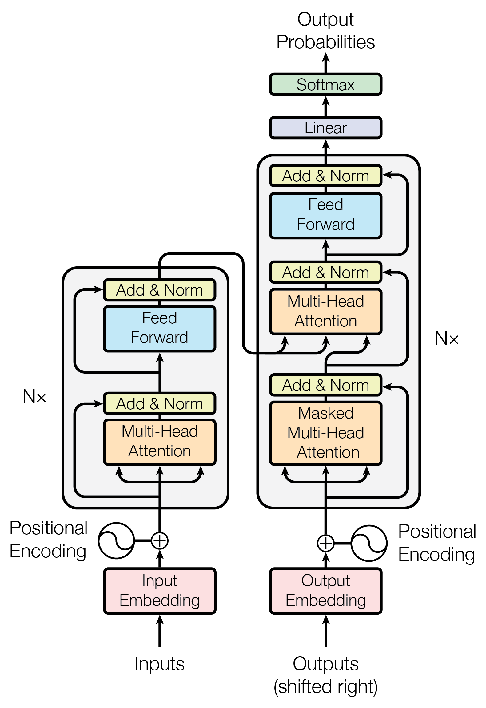
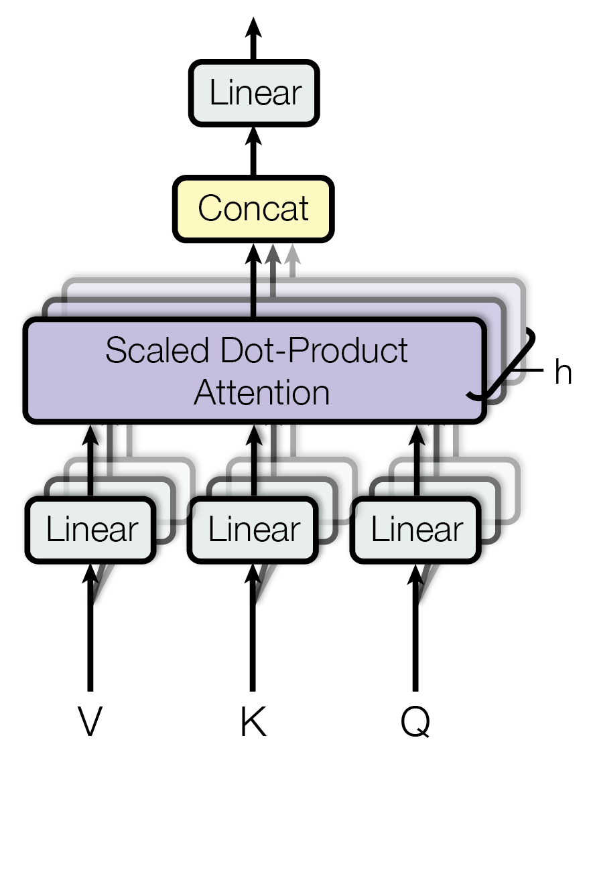
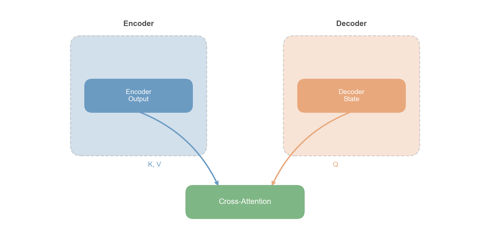

import torch
import torch.nn as nn
import torch.nn.functional as F
import math
class ScaledDotProductAttention(nn.Module):
"""
Scaled Dot-Product Attention
核心公式: Attention(Q,K,V) = softmax(QK^T / sqrt(d_k)) V
"""
def __init__(self, dropout=0.1):
super().__init__()
self.dropout = nn.Dropout(dropout)
def forward(self, Q, K, V, mask=None):
d_k = Q.size(-1)
# 计算注意力分数: [batch, heads, seq_len, seq_len]
scores = torch.matmul(Q, K.transpose(-2, -1)) / math.sqrt(d_k)
# 应用mask（用于因果注意力或padding mask）
if mask is not None:
scores = scores.masked_fill(mask == 0, float('-inf'))
# Softmax归一化
attention_weights = F.softmax(scores, dim=-1)
attention_weights = self.dropout(attention_weights)
# 加权求和
output = torch.matmul(attention_weights, V)
return output, attention_weights
class MultiHeadAttention(nn.Module):
"""
Multi-Head Attention
将d_model拆成h个头，每个头独立计算attention，最后拼接
"""
def __init__(self, d_model, num_heads, dropout=0.1):
super().__init__()
assert d_model % num_heads == 0, "d_model必须能被num_heads整除"
self.d_model = d_model
self.num_heads = num_heads
self.d_k = d_model // num_heads
# Q, K, V的线性投影
self.W_Q = nn.Linear(d_model, d_model)
self.W_K = nn.Linear(d_model, d_model)
self.W_V = nn.Linear(d_model, d_model)
self.W_O = nn.Linear(d_model, d_model)
self.attention = ScaledDotProductAttention(dropout)
def forward(self, Q, K, V, mask=None):
batch_size = Q.size(0)
# 线性投影并reshape为多头格式
Q = self.W_Q(Q).view(batch_size, -1, self.num_heads, self.d_k).transpose(1, 2)
K = self.W_K(K).view(batch_size, -1, self.num_heads, self.d_k).transpose(1, 2)
V = self.W_V(V).view(batch_size, -1, self.num_heads, self.d_k).transpose(1, 2)
# 计算attention
attn_output, _ = self.attention(Q, K, V, mask)
# 拼接所有头并做最终投影
attn_output = attn_output.transpose(1, 2).contiguous().view(batch_size, -1, self.d_model)
return self.W_O(attn_output)
class PositionwiseFeedForward(nn.Module):
"""FFN(x) = ReLU(xW_1 + b_1)W_2 + b_2"""
def __init__(self, d_model, d_ff, dropout=0.1):
super().__init__()
self.fc1 = nn.Linear(d_model, d_ff)
self.fc2 = nn.Linear(d_ff, d_model)
self.dropout = nn.Dropout(dropout)
def forward(self, x):
return self.fc2(self.dropout(F.relu(self.fc1(x))))
class PositionalEncoding(nn.Module):
"""正弦位置编码"""
def __init__(self, d_model, max_len=5000, dropout=0.1):
super().__init__()
self.dropout = nn.Dropout(dropout)
pe = torch.zeros(max_len, d_model)
position = torch.arange(0, max_len, dtype=torch.float).unsqueeze(1)
div_term = torch.exp(torch.arange(0, d_model, 2).float() * (-math.log(10000.0) / d_model))
pe[:, 0::2] = torch.sin(position * div_term)
pe[:, 1::2] = torch.cos(position * div_term)
self.register_buffer('pe', pe.unsqueeze(0))
def forward(self, x):
return self.dropout(x + self.pe[:, :x.size(1), :])
class TransformerEncoderLayer(nn.Module):
"""Transformer Encoder层：Self-Attention -> Add & Norm -> FFN -> Add & Norm"""
def __init__(self, d_model, num_heads, d_ff, dropout=0.1):
super().__init__()
self.self_attn = MultiHeadAttention(d_model, num_heads, dropout)
self.ffn = PositionwiseFeedForward(d_model, d_ff, dropout)
self.norm1 = nn.LayerNorm(d_model)
self.norm2 = nn.LayerNorm(d_model)
self.dropout = nn.Dropout(dropout)
def forward(self, x, mask=None):
# Self-Attention + Residual + LayerNorm
attn_output = self.self_attn(x, x, x, mask)
x = self.norm1(x + self.dropout(attn_output))
# FFN + Residual + LayerNorm
x = self.norm2(x + self.dropout(self.ffn(x)))
return x
class TransformerDecoderLayer(nn.Module):
"""Transformer Decoder层"""
def __init__(self, d_model, num_heads, d_ff, dropout=0.1):
super().__init__()
self.self_attn = MultiHeadAttention(d_model, num_heads, dropout)
self.cross_attn = MultiHeadAttention(d_model, num_heads, dropout)
self.ffn = PositionwiseFeedForward(d_model, d_ff, dropout)
self.norm1 = nn.LayerNorm(d_model)
self.norm2 = nn.LayerNorm(d_model)
self.norm3 = nn.LayerNorm(d_model)
self.dropout = nn.Dropout(dropout)
def forward(self, x, encoder_output, self_attn_mask=None, cross_attn_mask=None):
# Masked Self-Attention
x = self.norm1(x + self.dropout(self.self_attn(x, x, x, self_attn_mask)))
# Cross-Attention
x = self.norm2(x + self.dropout(self.cross_attn(x, encoder_output, encoder_output, cross_attn_mask)))
# FFN
x = self.norm3(x + self.dropout(self.ffn(x)))
return x
class Transformer(nn.Module):
"""完整的Transformer模型"""
def __init__(self, src_vocab_size, tgt_vocab_size, d_model=512, num_heads=8,
num_encoder_layers=6, num_decoder_layers=6, d_ff=2048,
max_len=5000, dropout=0.1):
super().__init__()
self.src_embedding = nn.Embedding(src_vocab_size, d_model)
self.tgt_embedding = nn.Embedding(tgt_vocab_size, d_model)
self.pos_encoding = PositionalEncoding(d_model, max_len, dropout)
self.encoder_layers = nn.ModuleList([
TransformerEncoderLayer(d_model, num_heads, d_ff, dropout)
for _ in range(num_encoder_layers)
])
self.decoder_layers = nn.ModuleList([
TransformerDecoderLayer(d_model, num_heads, d_ff, dropout)
for _ in range(num_decoder_layers)
])
self.output_projection = nn.Linear(d_model, tgt_vocab_size)
self.scale = math.sqrt(d_model)
def encode(self, src, src_mask=None):
x = self.pos_encoding(self.src_embedding(src) * self.scale)
for layer in self.encoder_layers:
x = layer(x, src_mask)
return x
def decode(self, tgt, encoder_output, tgt_mask=None, src_mask=None):
x = self.pos_encoding(self.tgt_embedding(tgt) * self.scale)
for layer in self.decoder_layers:
x = layer(x, encoder_output, tgt_mask, src_mask)
return x
def forward(self, src, tgt, src_mask=None, tgt_mask=None):
encoder_output = self.encode(src, src_mask)
decoder_output = self.decode(tgt, encoder_output, tgt_mask, src_mask)
return self.output_projection(decoder_output)
def create_causal_mask(seq_len):
"""创建因果mask，防止看到未来的token"""
mask = torch.triu(torch.ones(seq_len, seq_len), diagonal=1).bool()
return ~mask.unsqueeze(0).unsqueeze(0)第8章：Transformer——注意力即一切
Attention Is All You Need
NLP
Deep Learning
Transformer
Attention
Attention Is All You Need：Transformer如何用纯注意力替代循环结构，Multi-Head、FFN、残差连接的设计智慧，以及这个架构为何改变了一切。
核心问题：能否用纯注意力机制替代循环结构，构建一个并行高效、能捕获任意距离依赖的序列建模架构？
历史坐标：2017年 | Vaswani et al. “Attention Is All You Need” | Google Brain/Google Research
1 从上一章说起
上一章我们见证了Self-Attention的诞生。这是一个概念性的突破：序列中的每个位置可以直接关注其他任意位置，不再需要通过RNN的逐步传递来建立长距离依赖。Self-Attention彻底打破了循环网络的顺序枷锁，让任意两个位置可以一步到位地直接交互。这不仅解决了长距离依赖的问题，还带来了一个意想不到的副产品：既然不同位置之间的注意力计算彼此独立，它们就可以完全并行——GPU终于能发挥它真正的实力了。更妙的是，注意力权重本身就是可解释的，你可以直接看到模型在处理某个词时”关注”了哪些其他词，这在黑箱横行的深度学习时代尤为珍贵。
然而，Self-Attention仍然面临几个关键问题。首先是位置信息的缺失：纯Self-Attention是置换不变的（permutation invariant），打乱输入顺序，输出也只是相应打乱，模型完全不知道”谁在谁前面”。其次，之前的Self-Attention通常只是作为RNN的辅助模块，而非独立架构。最后，如何堆叠多层？如何处理编码器-解码器结构？如何保证训练稳定？这些架构设计问题都还悬而未决。
2017年，Google的研究团队在论文”Attention Is All You Need”中给出了一个大胆的回答。
💡 本章核心洞察：完全抛弃循环结构，用精心设计的注意力模块（Scaled Dot-Product Attention + Multi-Head）配合位置编码、残差连接、层归一化，构建一个完整的序列到序列架构——Transformer。
这个决定在当时看来相当激进。RNN已经统治序列建模领域多年，放弃它意味着放弃一种直觉上合理的归纳偏置——毕竟，顺序处理符合人类阅读的方式。但实验结果令人震惊：Transformer不仅在机器翻译任务上大幅超越了当时最好的RNN模型，训练速度还快了一个数量级。
这一章，我们将深入理解Transformer的每个设计决策：为什么要这样做？还有什么其他选择？这些选择带来了什么后果？
2 问题的本质是什么？
2.1 问题的精确定义
我们要解决的核心问题是序列到序列建模（Sequence-to-Sequence）：给定输入序列 \(\mathbf{x} = (x_1, x_2, \ldots, x_n)\)，生成输出序列 \(\mathbf{y} = (y_1, y_2, \ldots, y_m)\)。这个问题为什么重要？因为几乎所有的自然语言处理任务都可以转化为某种形式的序列到序列问题。机器翻译是把英文句子变成中文句子，文本摘要是把长文档变成短摘要，对话系统是把用户输入变成系统回复，代码生成是把自然语言描述变成代码。找到一个通用的序列建模架构，就等于找到了NLP的”万能钥匙”。
2.2 RNN-based Seq2Seq的局限
在Transformer之前，主流的Seq2Seq架构是基于RNN的Encoder-Decoder加上Attention机制（详见第4-6章）。

自绘示意图，基于 Bahdanau et al. (2015) 和 Sutskever et al. (2014) 的 Seq2Seq + Attention 架构
回顾前几章的讨论，这个架构有三个根本性的问题：顺序计算瓶颈（第4章）——RNN必须串行计算 \(h_t = f(h_{t-1}, x_t)\)，GPU无法并行；长距离依赖衰减（第4章）——即使有LSTM/GRU的门控缓解，信息仍需逐步传递，100步的非线性变换不可避免地带来损失；Attention受限于RNN骨架（第5-6章）——Attention只是RNN之间的桥梁，Encoder和Decoder内部仍然是顺序处理。
2.3 我们需要什么样的架构？
从上述分析可以看出，理想的序列建模架构应该满足几个关键需求。首先是并行计算能力，这样才能充分利用GPU加速训练。其次是直接的长距离连接，让任意两个位置可以一步到位地交互。同时必须保留位置信息，因为序列顺序对语言理解至关重要。当然，表达能力要足够强，至少能匹配或超越RNN。最后，训练要稳定，深层网络要能收敛。
Transformer的设计正是为了同时满足这些需求。
3 核心思想与直觉
3.1 革命性洞察：注意力本身就是计算
传统观点把注意力看作一种选择机制——从一堆信息中挑选重要的部分。Transformer的洞察更加深刻：注意力可以是计算本身，不只是选择信息，而是通过加权聚合来生成新的表示。
让我用一个图书馆的类比来解释这个区别。RNN的方式就像你按顺序阅读书架上的每本书，一本接一本，用笔记记录累积的理解。读到第100本书时，你对第1本的记忆已经模糊了。Transformer的方式则完全不同：你同时把所有书摊开在桌上，对于每个问题（Query），快速扫视所有书（Key），找出相关的（高注意力权重），然后综合这些相关内容（Value的加权和）得到答案。这种方式不仅更高效，而且不会遗忘。
3.2 核心架构概览
Transformer由两个主要部分组成：Encoder负责理解输入序列，Decoder负责生成输出序列。

Source: Vaswani et al. (2017) “Attention Is All You Need”, Figure 1
整个架构由五种核心组件构成。Scaled Dot-Product Attention负责高效地计算注意力。Multi-Head Attention让多个注意力”头”关注不同的子空间。Positional Encoding注入位置信息。Feed-Forward Network提供逐位置的非线性变换。Residual Connection和Layer Norm则保证深层训练的稳定性。
3.3 设计动机：为什么这些组件？
每个组件都是为了解决特定问题而存在的。Scaled Dot-Product用点积计算注意力，比加性注意力更高效，因为可以直接利用矩阵乘法的硬件优化。缩放因子\(\sqrt{d_k}\)防止softmax饱和导致的梯度消失。Multi-Head让模型能同时捕获多种不同类型的关系模式。Positional Encoding弥补了纯注意力机制丢失的位置信息。FFN提供必要的非线性变换能力，因为单纯的注意力操作本质上是线性的。Residual和LayerNorm则是深层网络训练的标配，没有它们模型根本无法收敛。
4 技术细节
4.1 Scaled Dot-Product Attention
4.1.1 基本公式
上一章我们建立了Self-Attention的Q-K-V框架和基本计算流程（第7章）。现在让我们看Transformer论文如何将其形式化为一个高效的标准化计算模块。给定Query矩阵 \(Q \in \mathbb{R}^{n \times d_k}\)，Key矩阵 \(K \in \mathbb{R}^{m \times d_k}\)，Value矩阵 \(V \in \mathbb{R}^{m \times d_v}\)，Scaled Dot-Product Attention的计算公式是：
\[ \text{Attention}(Q, K, V) = \text{softmax}\left(\frac{QK^\top}{\sqrt{d_k}}\right)V \]
这里\(n\)是Query的数量，\(m\)是Key/Value的数量，\(d_k\)是Key的维度，\(d_v\)是Value的维度。
NoteAlgorithm: Scaled Dot-Product Attention (Vaswani et al., 2017)
输入： - Query 矩阵 \(Q \in \mathbb{R}^{n \times d_k}\) - Key 矩阵 \(K \in \mathbb{R}^{m \times d_k}\) - Value 矩阵 \(V \in \mathbb{R}^{m \times d_v}\) - 可选的 Mask 矩阵 \(M \in \mathbb{R}^{n \times m}\)
输出：注意力输出 \(\text{Output} \in \mathbb{R}^{n \times d_v}\)
1. 计算注意力分数（点积）:
S ← Q × K^T # S ∈ ℝ^(n × m)
2. 缩放（防止 softmax 饱和）:
S ← S / √d_k
3. 应用 Mask（可选，用于因果注意力）:
if Mask is provided:
S ← S + M # M 中非法位置为 -∞
4. Softmax 归一化（按行）:
A ← softmax(S, dim=-1) # A ∈ ℝ^(n × m), 每行和为 1
5. 加权聚合:
Output ← A × V # Output ∈ ℝ^(n × d_v)
6. return Output, A # 返回输出和注意力权重关键设计： - 缩放因子 \(\sqrt{d_k}\) 确保点积方差为 1，避免 softmax 梯度消失 - Mask 中的 \(-\infty\) 经 softmax 变为 0，实现”不可见”效果 - 时间复杂度：\(O(n \cdot m \cdot d_k + n \cdot m \cdot d_v) = O(n \cdot m \cdot d)\) - 空间复杂度：\(O(n \cdot m)\)（注意力矩阵）
Source: Vaswani, A. et al. (2017). “Attention Is All You Need”. NeurIPS 2017. arXiv:1706.03762
整个计算流程可以用下图表示：

Source: Vaswani et al. (2017) “Attention Is All You Need”, Figure 2 (left)
4.1.2 为什么要除以 \(\sqrt{d_k}\)？
这是Transformer论文中最精妙的细节之一，值得我们从数学上仔细理解。
问题的根源在于：当\(d_k\)较大时，点积\(q \cdot k\)的方差会变大。假设\(q\)和\(k\)的每个分量都是独立同分布的，均值为0，方差为1。那么点积的方差是多少呢？
\[ \text{Var}(q \cdot k) = \text{Var}\left(\sum_{i=1}^{d_k} q_i k_i\right) = \sum_{i=1}^{d_k} \text{Var}(q_i k_i) = d_k \]
当\(d_k = 512\)时，点积的标准差约为\(\sqrt{512} \approx 22.6\)。这意味着点积值可能非常大或非常小。
这会带来什么后果？如果某个点积远大于其他点积，softmax输出会接近one-hot分布，梯度会趋近于零（因为softmax在饱和区的梯度很小），学习就会停滞。
解决方案很优雅：除以\(\sqrt{d_k}\)，将方差重新标准化为1。
\[ \text{Var}\left(\frac{q \cdot k}{\sqrt{d_k}}\right) = \frac{d_k}{d_k} = 1 \]
这保证了无论\(d_k\)多大，注意力分数的分布都保持稳定。在\(d_k = 64\)的典型设置下，不缩放时点积标准差约为8，softmax容易饱和；缩放后标准差为1，softmax梯度稳定。
4.1.3 Mask的作用
在解码器的Self-Attention中，我们需要因果遮罩（Causal Mask）来保证模型只能看到过去，不能看到未来。Mask矩阵的定义是：当\(i \geq j\)时为0，当\(i < j\)时为\(-\infty\)。加上Mask后：
\[ \text{Attention}(Q, K, V) = \text{softmax}\left(\frac{QK^\top}{\sqrt{d_k}} + \text{Mask}\right)V \]
\(-\infty\)经过softmax变成0，实现了”看不到未来”的效果。这对于自回归生成至关重要——在生成第\(t\)个词时，模型只能依赖已经生成的前\(t-1\)个词。
4.1.4 完整数值示例：从Embedding到Attention输出
抽象的公式有时让人难以建立直觉。让我们用一个极简的例子，手把手走完从词嵌入到注意力输出的全过程。
设定：句子 “I love NLP”，共3个词。为了便于手算，我们设 \(d_{model} = 4\)（实际模型用512或更大）。
Step 1: 词嵌入（Word Embedding）
假设我们的词嵌入矩阵已经训练好，查表得到每个词的向量：
\[ \begin{aligned} \text{I} &\rightarrow [1.0, 0.0, 1.0, 0.0] \\ \text{love} &\rightarrow [0.0, 1.0, 0.5, 0.5] \\ \text{NLP} &\rightarrow [1.0, 1.0, 0.0, 0.0] \end{aligned} \]
写成矩阵形式 \(E \in \mathbb{R}^{3 \times 4}\)：
\[ E = \begin{bmatrix} 1.0 & 0.0 & 1.0 & 0.0 \\ 0.0 & 1.0 & 0.5 & 0.5 \\ 1.0 & 1.0 & 0.0 & 0.0 \end{bmatrix} \]
Step 2: 位置编码（Positional Encoding）
使用正弦位置编码公式。对于 \(d_{model} = 4\)，我们有两对 sin/cos（维度0-1用频率 \(\omega_0\)，维度2-3用频率 \(\omega_1\)）：
\[ \omega_0 = \frac{1}{10000^{0/4}} = 1, \quad \omega_1 = \frac{1}{10000^{2/4}} = 0.01 \]
计算每个位置的编码：
\[ \begin{aligned} PE_0 &= [\sin(0), \cos(0), \sin(0), \cos(0)] = [0, 1, 0, 1] \\ PE_1 &= [\sin(1), \cos(1), \sin(0.01), \cos(0.01)] \approx [0.84, 0.54, 0.01, 1.00] \\ PE_2 &= [\sin(2), \cos(2), \sin(0.02), \cos(0.02)] \approx [0.91, -0.42, 0.02, 1.00] \end{aligned} \]
位置编码矩阵 \(PE \in \mathbb{R}^{3 \times 4}\)：
\[ PE = \begin{bmatrix} 0.00 & 1.00 & 0.00 & 1.00 \\ 0.84 & 0.54 & 0.01 & 1.00 \\ 0.91 & -0.42 & 0.02 & 1.00 \end{bmatrix} \]
Step 3: 输入表示 = 词嵌入 + 位置编码
\[ X = E + PE = \begin{bmatrix} 1.00 & 1.00 & 1.00 & 1.00 \\ 0.84 & 1.54 & 0.51 & 1.50 \\ 1.91 & 0.58 & 0.02 & 1.00 \end{bmatrix} \]
现在每个词的表示既包含语义信息（词嵌入），也包含位置信息（位置编码）。
Step 4: 线性投影得到 Q, K, V
为简化演示，假设投影矩阵 \(W^Q, W^K, W^V\) 都是单位矩阵（实际中是可学习参数）：
\[ Q = XW^Q = X, \quad K = XW^K = X, \quad V = XW^V = X \]
在 Self-Attention 中，Q、K、V 都来自同一个输入 \(X\)。
Step 5: 计算注意力分数 \(QK^\top\)
这一步计算每对位置之间的”相似度”：
\[ QK^\top = XX^\top = \begin{bmatrix} 1.00 & 1.00 & 1.00 & 1.00 \\ 0.84 & 1.54 & 0.51 & 1.50 \\ 1.91 & 0.58 & 0.02 & 1.00 \end{bmatrix} \begin{bmatrix} 1.00 & 0.84 & 1.91 \\ 1.00 & 1.54 & 0.58 \\ 1.00 & 0.51 & 0.02 \\ 1.00 & 1.50 & 1.00 \end{bmatrix} \]
逐元素计算（以第(1,2)个元素为例）：
\[ (QK^\top)_{12} = 1.0 \times 0.84 + 1.0 \times 1.54 + 1.0 \times 0.51 + 1.0 \times 1.50 = 4.39 \]
完整的注意力分数矩阵：
\[ QK^\top = \begin{bmatrix} 4.00 & 4.39 & 3.51 \\ 4.39 & 5.06 & 3.64 \\ 3.51 & 3.64 & 4.70 \end{bmatrix} \]
观察：对角线元素（自己与自己的相似度）通常较高，但不一定最高。
Step 6: 缩放（除以 \(\sqrt{d_k}\)）
\(d_k = 4\)，所以 \(\sqrt{d_k} = 2\)：
\[ \frac{QK^\top}{\sqrt{d_k}} = \begin{bmatrix} 2.00 & 2.20 & 1.76 \\ 2.20 & 2.53 & 1.82 \\ 1.76 & 1.82 & 2.35 \end{bmatrix} \]
缩放使得数值更加温和，避免 softmax 饱和。
Step 7: Softmax（按行归一化）
对每一行应用 softmax，得到注意力权重 \(A\)：
\[ \text{softmax}([2.00, 2.20, 1.76]) = \frac{[e^{2.00}, e^{2.20}, e^{1.76}]}{\sum} = \frac{[7.39, 9.03, 5.81]}{22.23} = [0.33, 0.41, 0.26] \]
完整的注意力权重矩阵：
\[ A = \begin{bmatrix} 0.33 & 0.41 & 0.26 \\ 0.30 & 0.42 & 0.28 \\ 0.27 & 0.29 & 0.44 \end{bmatrix} \]
解读注意力权重：
- 第1行：处理 “I” 时，模型最关注 “love”（0.41），其次是自己（0.33），最后是 “NLP”（0.26）
- 第2行：处理 “love” 时，也最关注自己（0.42），但同时也在看 “I” 和 “NLP”
- 第3行：处理 “NLP” 时，最关注自己（0.44），这符合直觉——专有名词更依赖自身语义
Step 8: 加权求和得到输出
最终输出是 Value 向量的加权和：
\[ \text{Output} = AV = A \cdot X \]
以第一行（“I” 的新表示）为例：
\[ \text{Output}_1 = 0.33 \times [1.00, 1.00, 1.00, 1.00] + 0.41 \times [0.84, 1.54, 0.51, 1.50] + 0.26 \times [1.91, 0.58, 0.02, 1.00] \]
\[ = [0.33, 0.33, 0.33, 0.33] + [0.34, 0.63, 0.21, 0.62] + [0.50, 0.15, 0.01, 0.26] = [1.17, 1.11, 0.55, 1.21] \]
完整输出矩阵：
\[ \text{Output} = \begin{bmatrix} 1.17 & 1.11 & 0.55 & 1.21 \\ 1.15 & 1.15 & 0.54 & 1.22 \\ 1.31 & 0.99 & 0.44 & 1.13 \end{bmatrix} \]
关键洞察：
注意力机制做了什么？比较输入 \(X\) 和输出：
- 信息融合：每个词的输出不再只是自己的表示，而是融合了其他词的信息。“I” 的新表示包含了 “love” 和 “NLP” 的成分。
- 上下文感知：同一个词 “I” 在不同句子中会有不同的输出，因为它会融合不同的上下文。
- 软选择：通过 softmax 权重实现”软”的信息选择，而非硬性地只看某一个词。
这就是 Self-Attention 的核心：让每个词都能”看到”整个句子，并根据相关性选择性地融合信息。
Note实际模型的规模
上面的例子用 \(d_{model} = 4\) 是为了手算方便。实际的 Transformer Base 用 \(d_{model} = 512\)，序列长度可达数百甚至数千。注意力矩阵的大小是 \(n \times n\)，这就是 \(O(n^2)\) 复杂度的来源。
4.2 Multi-Head Attention
4.2.1 动机：为什么需要多头？
单头注意力有一个根本性的局限：每个位置只能有一种”关注模式”。但在自然语言中，一个词可能同时需要关注多种不同类型的信息。比如动词需要关注它的主语（语法关系），代词需要关注它的先行词（指代关系），同义词之间也需要相互关注（语义关系）。单头难以同时捕获这些不同类型的依赖，这就是Multi-Head的动机。
4.2.2 数学形式
Multi-Head Attention的核心思想是将\(d_{model}\)维的Q、K、V分别投影到\(h\)个子空间，在每个子空间独立计算注意力，最后拼接起来：
\[ \text{MultiHead}(Q, K, V) = \text{Concat}(\text{head}_1, \ldots, \text{head}_h)W^O \]
其中每个head的计算是：
\[ \text{head}_i = \text{Attention}(QW_i^Q, KW_i^K, VW_i^V) \]
参数矩阵的维度设计很讲究：\(W_i^Q\)和\(W_i^K\)都是\(d_{model} \times d_k\)，\(W_i^V\)是\(d_{model} \times d_v\)，输出投影\(W^O\)是\(hd_v \times d_{model}\)。通常设置\(d_k = d_v = d_{model}/h\)，这样保证了总参数量不变。
NoteAlgorithm: Multi-Head Attention (Vaswani et al., 2017)
输入： - Query 矩阵 \(Q \in \mathbb{R}^{n \times d_{model}}\) - Key 矩阵 \(K \in \mathbb{R}^{m \times d_{model}}\) - Value 矩阵 \(V \in \mathbb{R}^{m \times d_{model}}\) - 头数 \(h\)，每头维度 \(d_k = d_v = d_{model} / h\)
参数： - 投影矩阵 \(W_i^Q, W_i^K \in \mathbb{R}^{d_{model} \times d_k}\)，\(W_i^V \in \mathbb{R}^{d_{model} \times d_v}\)，\(i = 1, \ldots, h\) - 输出投影 \(W^O \in \mathbb{R}^{h \cdot d_v \times d_{model}}\)
输出：\(\text{MultiHead}(Q, K, V) \in \mathbb{R}^{n \times d_{model}}\)
1. 并行计算 h 个注意力头:
for i = 1 to h (in parallel):
Q_i ← Q × W_i^Q # 投影到第 i 个子空间
K_i ← K × W_i^K
V_i ← V × W_i^V
head_i ← Attention(Q_i, K_i, V_i, mask) # Scaled Dot-Product
2. 拼接所有头的输出:
Concat ← [head_1; head_2; ...; head_h] # Concat ∈ ℝ^(n × h·d_v)
3. 最终线性投影:
Output ← Concat × W^O # Output ∈ ℝ^(n × d_model)
4. return Output设计动机： - 不同的 head 可以关注不同类型的关系（语法、语义、位置等） - 投影到低维子空间 (\(d_k = d_{model}/h\)) 使计算可行 - 总参数量 = \(4 \times d_{model}^2\)，与单头 Attention 相同
典型配置（Transformer Base）： - \(d_{model} = 512\), \(h = 8\), \(d_k = d_v = 64\)
Source: Vaswani, A. et al. (2017). “Attention Is All You Need”. NeurIPS 2017. arXiv:1706.03762

Source: Vaswani et al. (2017) “Attention Is All You Need”, Figure 2 (right)
4.2.3 Head数量的选择
Transformer base使用\(h=8\)，large使用\(h=16\)。选择的考量涉及一个权衡：头太少，表达能力不足；头太多，每个head的维度\(d_k = d_{model}/h\)就太小，信息容量不足。经验法则是\(d_k \geq 64\)通常是下限。
后续研究发现不同head确实学到了不同的模式。有的head关注局部（相邻词），有的关注全局（长距离依赖）；有的关注语法结构，有的关注语义相似性。这印证了Multi-Head设计的合理性。
4.3 位置编码在Transformer中的角色
第7章已经详细讨论了位置编码的动机（Self-Attention的置换等变性）、正弦编码的数学原理与实现、以及可学习编码等替代方案。这里我们聚焦于位置编码在Transformer架构中的具体集成方式。
Transformer采用了正弦位置编码，通过加法注入的方式与词嵌入结合：输入表示 = 词嵌入 + 位置编码。这意味着语义信息和位置信息在同一个\(d_{model}\)维空间中混合。一个值得注意的工程细节是，词嵌入在相加前需要乘以\(\sqrt{d_{model}}\)进行缩放——因为embedding层初始化的值通常很小，直接与PE相加会导致位置信号淹没语义信号。

Python生成，基于 Vaswani et al. (2017) 的正弦位置编码公式。arXiv:1706.03762
Transformer原论文比较了正弦编码和可学习编码，发现两者效果相当。但后续发展表明，位置编码的选择对模型能力有深远影响——RoPE和ALiBi等新型方案（见第26章）在长度外推方面表现更优。本章”深入理解”一节提供了正弦编码相对位置性质的完整数学证明。
4.4 Feed-Forward Network
每个Transformer层都包含一个逐位置的前馈网络，它的形式很简单：两层线性变换夹一个ReLU激活：
\[ \text{FFN}(x) = \text{ReLU}(xW_1 + b_1)W_2 + b_2 \]
其中\(W_1 \in \mathbb{R}^{d_{model} \times d_{ff}}\)，\(W_2 \in \mathbb{R}^{d_{ff} \times d_{model}}\)，通常\(d_{ff} = 4 \times d_{model}\)。
FFN是一个被低估的组件。直觉上，Self-Attention负责”信息交流”——决定收集哪些信息，进行不同位置间的加权聚合；FFN负责”信息处理”——决定如何处理信息，对每个位置的表示做非线性变换。可以把这种分工类比为：Attention是”开会讨论”，FFN是”个人思考”。
一个令人惊讶的事实是，在标准Transformer中，FFN的参数量占模型总参数的约三分之二。FFN参数量是\(2 \times d_{model} \times d_{ff} = 8d_{model}^2\)，而Attention参数量只有\(4 \times d_{model}^2\)。后续研究发现FFN可能起到”记忆”的作用——存储知识，不同层的FFN关注不同类型的信息。稀疏化FFN（如Mixture of Experts）成为了扩展模型规模的重要方向。
4.5 残差连接与Layer Normalization
4.5.1 残差连接
每个子层（Attention或FFN）都被残差连接包裹。残差连接解决的是梯度流动问题：它提供了一条”高速公路”让梯度直接传回前层，使得深层网络训练成为可能。Transformer base有6层，large有12层；后来的模型到96层甚至更多，没有残差连接这是不可想象的。
4.5.2 Layer Normalization
与Batch Normalization不同，Layer Norm在特征维度而非batch维度上归一化：
\[ \text{LayerNorm}(x) = \gamma \odot \frac{x - \mu}{\sigma + \epsilon} + \beta \]
其中\(\mu\)和\(\sigma\)是\(x\)在特征维度上的均值和标准差。
为什么用LayerNorm而非BatchNorm？原因有三。第一，序列长度不固定，不同序列长度不同，batch统计不稳定。第二，LayerNorm不依赖batch统计，训练和推理行为一致。第三，每个样本独立归一化，对并行更友好。
4.5.3 Pre-Norm vs Post-Norm
原始Transformer使用Post-Norm，先子层后归一化：\(x_{l+1} = \text{LayerNorm}(x_l + \text{Sublayer}(x_l))\)。后来的模型多采用Pre-Norm，先归一化后子层：\(x_{l+1} = x_l + \text{Sublayer}(\text{LayerNorm}(x_l))\)。

自绘示意图，基于 Xiong et al. (2020) “On Layer Normalization in the Transformer Architecture”. arXiv:2002.04745
Pre-Norm的优势在于更稳定的训练，尤其是深层模型，甚至不需要warmup也能收敛。GPT系列、LLaMA等都采用了Pre-Norm。
4.6 Encoder与Decoder的结构差异
Transformer的Encoder和Decoder有三个关键区别。
第一个区别是Self-Attention的类型。Encoder使用双向Self-Attention，每个位置可以看到整个输入序列：
\[ \text{Attention}_{ij} = \frac{\exp(q_i \cdot k_j / \sqrt{d_k})}{\sum_l \exp(q_i \cdot k_l / \sqrt{d_k})} \]
没有Mask，第\(i\)个位置可以关注任意位置\(j\)。而Decoder使用因果Self-Attention，第\(i\)个位置只能关注位置\(1, 2, \ldots, i\)：
\[ \text{Attention}_{ij} = \begin{cases} \frac{\exp(q_i \cdot k_j / \sqrt{d_k})}{\sum_{l \leq i} \exp(q_i \cdot k_l / \sqrt{d_k})} & j \leq i \\ 0 & j > i \end{cases} \]
这保证了生成时只用到已生成的token，符合自回归的要求。
第二个区别是Decoder有一个额外的Cross-Attention层，通过它连接到Encoder。Query来自Decoder当前层的输出，Key和Value来自Encoder最后一层的输出。这使得生成每个词时都可以参考整个输入序列。

自绘示意图，基于 Vaswani et al. (2017) “Attention Is All You Need”, Figure 1. arXiv:1706.03762
第三个区别是用途：Encoder负责理解输入序列，产生上下文表示；Decoder负责基于这些表示生成输出序列。
4.7 复杂度分析
设序列长度为\(n\)，模型维度为\(d\)。Self-Attention的时间复杂度是\(O(n^2 d)\)，瓶颈在于\(n^2\)的注意力矩阵计算。FFN的时间复杂度是\(O(n d^2)\)，瓶颈在于\(d^2\)的线性变换。总计是\(O(n^2 d + n d^2)\)，当序列很长时\(n^2\)项主导。
与RNN的\(O(n d^2)\)相比，Transformer在\(n < d\)时更快，\(n > d\)时更慢。但关键区别在于并行性：RNN需要\(O(n)\)个顺序步骤，完全无法并行；Transformer只需要\(O(1)\)个顺序步骤（只是层数），计算完全并行。这是Transformer训练速度远超RNN的根本原因。
空间复杂度方面，最大的开销是注意力矩阵，需要\(O(n^2)\)的空间。对于长序列，比如处理整本书，这会成为严重问题。这为第9章的高效注意力研究埋下了伏笔。
5 数学推导深入
研究者视角：这一节提供更详细的数学推导，帮助深入理解Transformer的计算细节
5.1 矩阵维度的逐步追踪
理解Transformer的一个关键是追踪每一步的矩阵维度。让我们以单个Self-Attention层为例，假设输入序列长度为\(n\)，模型维度为\(d_{model}\)，使用\(h\)个注意力头，每个头的维度为\(d_k = d_v = d_{model}/h\)。
输入：\(X \in \mathbb{R}^{n \times d_{model}}\)
Step 1：线性投影
\[ Q = XW^Q, \quad K = XW^K, \quad V = XW^V \]
其中\(W^Q, W^K \in \mathbb{R}^{d_{model} \times d_k}\)，\(W^V \in \mathbb{R}^{d_{model} \times d_v}\)。
得到：\(Q, K \in \mathbb{R}^{n \times d_k}\)，\(V \in \mathbb{R}^{n \times d_v}\)
Step 2：计算注意力分数
\[ S = \frac{QK^\top}{\sqrt{d_k}} \]
矩阵乘法：\((n \times d_k) \times (d_k \times n) = (n \times n)\)
得到：\(S \in \mathbb{R}^{n \times n}\)——这就是\(O(n^2)\)复杂度的来源
Step 3：Softmax归一化
\[ A = \text{softmax}(S) \in \mathbb{R}^{n \times n} \]
对每一行做softmax，保持维度不变。第\((i,j)\)个元素表示位置\(i\)对位置\(j\)的注意力权重。
Step 4：加权聚合
\[ \text{Output} = AV \]
矩阵乘法：\((n \times n) \times (n \times d_v) = (n \times d_v)\)
得到：\(\text{Output} \in \mathbb{R}^{n \times d_v}\)
Multi-Head的维度变化
对于\(h\)个头，每个头独立计算上述过程，得到\(h\)个\(\mathbb{R}^{n \times d_v}\)的输出。拼接后：
\[ \text{Concat}(\text{head}_1, \ldots, \text{head}_h) \in \mathbb{R}^{n \times (h \cdot d_v)} = \mathbb{R}^{n \times d_{model}} \]
最后通过\(W^O \in \mathbb{R}^{d_{model} \times d_{model}}\)投影，输出维度仍为\(\mathbb{R}^{n \times d_{model}}\)，与输入相同。
5.2 参数量的详细计算
让我们精确计算Transformer各组件的参数量。
5.2.1 Multi-Head Attention
每个MHA模块包含四个权重矩阵：
| 矩阵 | 维度 | 参数量 |
|---|---|---|
| \(W^Q\) | \(d_{model} \times d_{model}\) | \(d_{model}^2\) |
| \(W^K\) | \(d_{model} \times d_{model}\) | \(d_{model}^2\) |
| \(W^V\) | \(d_{model} \times d_{model}\) | \(d_{model}^2\) |
| \(W^O\) | \(d_{model} \times d_{model}\) | \(d_{model}^2\) |
MHA总参数量（不含偏置）：\(4d_{model}^2\)
注意：虽然我们把\(W^Q\)分成\(h\)个\(W_i^Q\)，但总参数量不变。这是因为\(h\)个\((d_{model} \times d_k)\)矩阵拼接起来就是一个\((d_{model} \times d_{model})\)矩阵。
5.2.2 Feed-Forward Network
\[ \text{FFN}(x) = \text{ReLU}(xW_1 + b_1)W_2 + b_2 \]
| 矩阵/向量 | 维度 | 参数量 |
|---|---|---|
| \(W_1\) | \(d_{model} \times d_{ff}\) | \(d_{model} \cdot d_{ff}\) |
| \(b_1\) | \(d_{ff}\) | \(d_{ff}\) |
| \(W_2\) | \(d_{ff} \times d_{model}\) | \(d_{ff} \cdot d_{model}\) |
| \(b_2\) | \(d_{model}\) | \(d_{model}\) |
FFN总参数量：\(2 \cdot d_{model} \cdot d_{ff} + d_{ff} + d_{model}\)
当\(d_{ff} = 4 \cdot d_{model}\)时（标准设置）：
\[ \text{FFN参数量} \approx 2 \cdot d_{model} \cdot 4d_{model} = 8d_{model}^2 \]
5.2.3 单层Transformer的参数量比较
| 组件 | 参数量 | 占比 |
|---|---|---|
| Self-Attention | \(4d_{model}^2\) | 33% |
| FFN | \(8d_{model}^2\) | 67% |
| LayerNorm (×2) | \(4d_{model}\) | ≈0% |
| 总计 | \(12d_{model}^2 + 4d_{model}\) | 100% |
这解释了一个有趣的现象：FFN的参数量是Attention的两倍。这意味着大模型的大部分参数实际上在FFN中，而非Attention中。
5.2.4 完整模型参数量
以Transformer Base为例（\(d_{model}=512\), \(d_{ff}=2048\), \(L=6\)层, 词汇表\(V=32000\)）：
| 组件 | 计算 | 参数量 |
|---|---|---|
| Embedding | \(V \times d_{model}\) | 16.4M |
| Encoder (6层) | \(6 \times 12 \times d_{model}^2\) | 18.9M |
| Decoder (6层) | \(6 \times (12 + 4) \times d_{model}^2\) | 25.2M |
| Output Projection | \(d_{model} \times V\) | 16.4M |
| 总计 | 约65M |
注：Decoder每层多一个Cross-Attention（\(4d_{model}^2\)）
5.3 Softmax梯度与缩放因子的数学分析
5.3.1 为什么Softmax会饱和？
Softmax函数定义为：
\[ \text{softmax}(z)_i = \frac{e^{z_i}}{\sum_j e^{z_j}} \]
考虑输入\(z = [a, 0, 0, \ldots, 0]\)，当\(a\)很大时：
\[ \text{softmax}(z) \approx [1, 0, 0, \ldots, 0] \]
现在计算Softmax对输入\(z_i\)的梯度。设\(p_i = \text{softmax}(z)_i\)，则：
\[ \frac{\partial p_i}{\partial z_j} = \begin{cases} p_i(1 - p_i) & i = j \\ -p_i p_j & i \neq j \end{cases} \]
当\(p_i \approx 1\)时，\(\frac{\partial p_i}{\partial z_i} = p_i(1-p_i) \approx 0\)。 当\(p_j \approx 0\)时，\(\frac{\partial p_i}{\partial z_j} = -p_i p_j \approx 0\)。
结论：Softmax在饱和区的梯度趋近于零，导致学习停滞。
5.3.2 缩放因子的精确推导
假设\(q, k \in \mathbb{R}^{d_k}\)，每个分量\(q_i, k_i \sim \mathcal{N}(0, 1)\)独立同分布。
点积\(z = q \cdot k = \sum_{i=1}^{d_k} q_i k_i\)。
由于\(q_i\)和\(k_i\)独立，\(q_i k_i\)的期望和方差为：
\[ \mathbb{E}[q_i k_i] = \mathbb{E}[q_i]\mathbb{E}[k_i] = 0 \]
\[ \text{Var}(q_i k_i) = \mathbb{E}[q_i^2 k_i^2] - (\mathbb{E}[q_i k_i])^2 = \mathbb{E}[q_i^2]\mathbb{E}[k_i^2] = 1 \cdot 1 = 1 \]
因此：
\[ \mathbb{E}[z] = \sum_{i=1}^{d_k} \mathbb{E}[q_i k_i] = 0 \]
\[ \text{Var}(z) = \sum_{i=1}^{d_k} \text{Var}(q_i k_i) = d_k \]
标准差\(\sigma_z = \sqrt{d_k}\)。当\(d_k = 512\)时，\(\sigma_z \approx 22.6\)。
除以\(\sqrt{d_k}\)后：
\[ \text{Var}\left(\frac{z}{\sqrt{d_k}}\right) = \frac{\text{Var}(z)}{d_k} = 1 \]
数值示例： 设\(d_k = 64\)，不缩放时点积的95%置信区间约为\([-16, 16]\)。 缩放后95%置信区间约为\([-2, 2]\)，Softmax输出更平滑，梯度更稳定。
5.4 位置编码的相对位置性质证明
正弦位置编码有一个优美的性质：任意固定偏移\(k\)的位置关系可以用线性变换表示。
命题：存在矩阵\(M_k\)（只依赖于\(k\)），使得对任意位置\(pos\)：
\[ PE_{pos+k} = M_k \cdot PE_{pos} \]
证明：
考虑位置编码的第\(2i\)和\(2i+1\)维（它们使用相同的频率\(\omega_i = 1/10000^{2i/d}\)）：
\[ \begin{bmatrix} PE_{pos, 2i} \\ PE_{pos, 2i+1} \end{bmatrix} = \begin{bmatrix} \sin(\omega_i \cdot pos) \\ \cos(\omega_i \cdot pos) \end{bmatrix} \]
利用三角恒等式：
\[ \sin(\omega_i(pos + k)) = \sin(\omega_i \cdot pos)\cos(\omega_i \cdot k) + \cos(\omega_i \cdot pos)\sin(\omega_i \cdot k) \]
\[ \cos(\omega_i(pos + k)) = \cos(\omega_i \cdot pos)\cos(\omega_i \cdot k) - \sin(\omega_i \cdot pos)\sin(\omega_i \cdot k) \]
写成矩阵形式：
\[ \begin{bmatrix} PE_{pos+k, 2i} \\ PE_{pos+k, 2i+1} \end{bmatrix} = \begin{bmatrix} \cos(\omega_i k) & \sin(\omega_i k) \\ -\sin(\omega_i k) & \cos(\omega_i k) \end{bmatrix} \begin{bmatrix} PE_{pos, 2i} \\ PE_{pos, 2i+1} \end{bmatrix} \]
这是一个旋转矩阵！对于每一对维度\((2i, 2i+1)\)，偏移\(k\)对应一个旋转角度\(\omega_i k\)。
完整的变换矩阵\(M_k\)是分块对角矩阵：
\[ M_k = \text{diag}(R_{\omega_0 k}, R_{\omega_1 k}, \ldots, R_{\omega_{d/2-1} k}) \]
其中\(R_\theta = \begin{bmatrix} \cos\theta & \sin\theta \\ -\sin\theta & \cos\theta \end{bmatrix}\)是2D旋转矩阵。
意义：这个性质使得模型可以通过学习线性变换来捕获相对位置关系。例如，学习”前一个词”（\(k=-1\)）或”后两个词”（\(k=2\)）的关系。
5.5 FLOPs计算：训练一个Transformer需要多少计算？
5.5.1 单次前向传播的FLOPs
对于序列长度\(n\)，模型维度\(d\)，\(L\)层Encoder：
Self-Attention（每层）：
| 操作 | 计算 | FLOPs |
|---|---|---|
| \(Q, K, V\)投影 | \(3 \times (n \times d) \times (d \times d)\) | \(6nd^2\) |
| \(QK^\top\) | \((n \times d) \times (d \times n)\) | \(2n^2d\) |
| \(\text{Softmax}(S)V\) | \((n \times n) \times (n \times d)\) | \(2n^2d\) |
| 输出投影 | \((n \times d) \times (d \times d)\) | \(2nd^2\) |
| 小计 | \(8nd^2 + 4n^2d\) |
FFN（每层）：
| 操作 | 计算 | FLOPs |
|---|---|---|
| \(W_1\)乘法 | \((n \times d) \times (d \times 4d)\) | \(8nd^2\) |
| ReLU | \(4nd\) | \(4nd\) |
| \(W_2\)乘法 | \((n \times 4d) \times (4d \times d)\) | \(8nd^2\) |
| 小计 | \(16nd^2 + 4nd\) |
单层Encoder：\(\approx 24nd^2 + 4n^2d\)
L层Encoder前向传播：\(\approx L(24nd^2 + 4n^2d)\)
5.5.2 训练的总FLOPs估算
训练时需要前向和反向传播，反向约为前向的2倍，因此单个样本约为前向的3倍。
对于Transformer Base（\(d=512\), \(L=6\), \(n=512\)）：
\[ \text{FLOPs/样本} \approx 3 \times 6 \times (24 \times 512 \times 512^2 + 4 \times 512^2 \times 512) \approx 3 \times 10^{10} \]
训练100K步，batch size 64：
\[ \text{总FLOPs} \approx 100000 \times 64 \times 3 \times 10^{10} \approx 2 \times 10^{17} \]
在A100 GPU（312 TFLOPS FP16）上，理论时间约为\(2 \times 10^{17} / 3.12 \times 10^{14} \approx 640\)秒，约10分钟。实际由于内存带宽等因素，通常需要数小时。
5.6 复杂度对比总结
| 模型 | 时间复杂度 | 空间复杂度 | 顺序操作数 | 最长路径 |
|---|---|---|---|---|
| RNN | \(O(nd^2)\) | \(O(d)\) | \(O(n)\) | \(O(n)\) |
| CNN (kernel \(k\)) | \(O(knd^2)\) | \(O(n)\) | \(O(1)\) | \(O(\log_k n)\) |
| Self-Attention | \(O(n^2d)\) | \(O(n^2)\) | \(O(1)\) | \(O(1)\) |
| Transformer | \(O(n^2d + nd^2)\) | \(O(n^2 + nd)\) | \(O(1)\) | \(O(1)\) |
解读：
- 最长路径：信息从位置1传到位置\(n\)需要经过多少层。RNN是\(O(n)\)，Transformer是\(O(1)\)（一步到位），这是Transformer捕获长距离依赖的关键优势。
- 顺序操作数：并行化的程度。RNN必须顺序执行\(n\)步，Transformer完全并行。
- 空间复杂度：Transformer的\(O(n^2)\)是痛点，长序列时显存瓶颈。
6 工程实践
6.1 从零实现Transformer
以下是Transformer核心模块的PyTorch实现，附详细注释：
6.2 使用Hugging Face Transformers
对于实际应用，推荐使用经过优化的库：
from transformers import T5ForConditionalGeneration, T5Tokenizer
# 加载预训练的T5模型（Encoder-Decoder Transformer）
model_name = "t5-small"
tokenizer = T5Tokenizer.from_pretrained(model_name)
model = T5ForConditionalGeneration.from_pretrained(model_name)
# 翻译任务示例
input_text = "translate English to German: Hello, how are you?"
input_ids = tokenizer(input_text, return_tensors="pt").input_ids
outputs = model.generate(input_ids, max_length=50)
translated = tokenizer.decode(outputs[0], skip_special_tokens=True)
print(f"Translation: {translated}")6.3 复现论文的关键细节
原始Transformer论文中有一些容易忽略但至关重要的细节。
首先是Embedding缩放：输入embedding需要乘以\(\sqrt{d_{model}}\)，因为embedding初始化通常较小，缩放后与位置编码的量级匹配。
其次是权重共享的可能性：原论文中，encoder和decoder的embedding可以共享；如果源语言和目标语言相同，output projection也可以与embedding共享，这样可以减少参数量。
Dropout的位置也有讲究：在attention分数计算后、残差加法前、以及embedding之后都要加dropout。
学习率策略使用了一个特殊的warmup schedule：
lrate = d_model^(-0.5) * min(step^(-0.5), step * warmup_steps^(-1.5))前warmup_steps步线性增加，之后按步数平方根衰减。这种设计对训练稳定性至关重要。
最后，论文使用了0.1的label smoothing，这有助于提高泛化性能。
6.4 实验验证
验证实现是否正确有几个关键步骤。首先检查各模块输入输出维度是否正确。然后在几个样本上尝试过拟合——如果模型正确，应该能完美过拟合小数据集。接着可视化attention pattern，检查是否合理。最后与Hugging Face等权威实现对比中间结果。
7 深入理解
研究者必读：这一节探讨Transformer的理论基础、边界条件和开放问题
7.1 为什么有效？——理论视角
7.1.1 表达能力分析
Transformer是通用函数逼近器吗？Yun et al. (2019) 给出了肯定的答案：在合适的条件下，Transformer可以以任意精度逼近任何连续的序列到序列函数。具体地，一个\(O(n)\)层的Transformer可以逼近任何Lipschitz连续的permutation equivariant函数。
与RNN相比，RNN也是通用逼近器，但需要无限精度的隐状态。Transformer的优势在于可以用有限宽度实现相同的逼近能力。
7.1.2 归纳偏置的视角
不同架构有不同的归纳偏置。RNN假设顺序处理和短程依赖，这符合语言直觉，但长距离依赖困难。CNN假设局部模式和层级结构，擅长捕获n-gram，但感受野有限。Transformer假设全局连接和位置无关，非常灵活且可并行，但需要学习位置关系，计算量也更大。
Transformer的归纳偏置可以说是”更弱”的——它不假设顺序或局部性，而是让模型自己学习这些模式。这意味着需要更多数据来学习显式的位置关系，但也更灵活，可以学到任意模式。当规模够大时，弱归纳偏置反而可能成为优势。
7.1.3 与Hopfield网络的联系
Ramsauer et al. (2020) 发现了一个有趣的联系：Transformer的attention机制可以理解为现代Hopfield网络的一步更新。这提供了一个全新的视角：Hopfield网络是联想记忆模型，Attention可以看作从”记忆”（Key-Value对）中”检索”与Query相关的内容。这也解释了为什么FFN可能起到存储知识的作用——它就是Transformer的”记忆体”。
7.2 为什么有效？——实证视角
7.2.1 Attention真的在学习有意义的模式吗？
通过可视化不同head的attention pattern，研究者发现确实如此。有些head学会了关注语法依赖，比如主谓关系、动宾关系。有些head学会了关注固定偏移，比如总是关注前一个词或后一个词。还有些head专门关注特殊token，如句号或[SEP]标记。

Python生成的合成示意图，模式参考 Clark et al. (2019) “What Does BERT Look At?” 和 Voita et al. (2019) “Analyzing Multi-Head Self-Attention” 的实证发现
7.2.2 哪些组件是必要的？
通过消融实验，研究者得出了明确的结论。减少Multi-Head的数量会导致性能下降，说明多头是重要的。移除FFN会导致大幅下降，说明它不可或缺。移除Residual会导致模型无法训练。移除LayerNorm会导致训练不稳定。移除Positional Encoding会导致输出几乎随机。
一个有趣的发现是，部分head可以被剪枝而不显著影响性能，说明模型存在一定的冗余。
7.3 方法的边界条件
7.3.1 隐含假设
Transformer隐含地做了几个假设。第一，位置信息可以通过加法注入——位置编码与内容编码相加，假设它们在同一语义空间可以混合。第二，全局交互是必要的——每个位置都与所有其他位置交互；如果任务只需要局部信息，这其实是一种浪费。第三，数据足够多——弱归纳偏置需要更多数据来补偿。
7.3.2 失效条件
在某些情况下，Transformer表现并不好。当数据量太小时，带有更强归纳偏置的模型（如CNN、RNN）可能表现更好。当序列太长时，\(O(n^2)\)的复杂度会成为瓶颈，超过几千token时需要特殊处理。对于需要精确位置推理的任务，如算术运算、数字排序，Transformer常常失败。对于强顺序依赖的任务，如解析嵌套结构，Transformer也可能不如专门设计的架构。
7.3.3 已知的Failure Modes
研究文献中报告了几种典型的失败模式。长度泛化失败：在短序列上训练的Transformer难以泛化到长序列。位置编码外推困难：超出训练长度后，正弦编码的外推效果不佳。对重复模式敏感：输入中的重复可能导致注意力过度集中。
7.4 变体与扩展
从架构角度看，Transformer衍生出了三大变体。Encoder-only的BERT用于理解任务。Decoder-only的GPT用于生成任务。Encoder-Decoder的T5和BART用于seq2seq任务。后续发展表明，Decoder-only架构在规模化后表现最好，这将在第16章详细讨论。
从注意力机制角度看，Sparse Attention只关注部分位置，Linear Attention将复杂度降到\(O(n)\)，相对位置编码如RoPE和ALiBi解决了外推问题。这些改进将在第9章和第26章展开。
7.5 开放研究问题
如果你要在这个方向写一篇论文，可以从哪些问题切入呢？
第一个方向是数据效率：为什么Transformer需要这么多数据？如何设计更好的归纳偏置？数据效率能提升多少？
第二个方向是位置编码：最优设计是什么？正弦、可学习、相对位置…哪种最好？能否设计出完美外推的位置编码？
第三个方向是FFN的作用：它到底在做什么？是在存储知识吗？能否用其他结构替代？
第四个方向是可解释性：Attention权重真的代表”关注”吗？如何更好地解释Transformer的决策？
第五个方向是效率：能否在保持性能的同时降低复杂度？稀疏注意力的极限在哪里？
8 局限性与未解决的问题
8.1 计算复杂度：\(O(n^2)\)的诅咒
Transformer最大的局限是Self-Attention的二次复杂度。考虑处理一本10万词的书：
\[ \text{注意力矩阵大小} = 100000^2 = 10^{10} \text{ 元素} \]
即使用FP16，也需要20GB显存仅用于存储注意力矩阵！这直接限制了长文档处理、长程对话、以及需要大上下文的任务如代码生成和法律分析。
8.2 位置编码的外推问题
原始正弦位置编码在训练长度之外表现不佳。如果模型在512长度上训练，面对1024长度的输入时，位置512-1023的编码模型从未见过，性能会急剧下降。这限制了模型的实际应用灵活性。
8.3 缺乏显式的层级结构
自然语言有天然的层级结构：词组成短语，短语组成句子，句子组成段落，段落组成文档。Transformer的flat attention没有显式建模这种层级，完全依赖模型自己学习。这可能是某些结构化任务上表现不佳的原因。
8.4 这些局限导向了什么？
上述问题推动了后续研究。\(O(n^2)\)复杂度的问题催生了第9章的高效注意力机制，包括Longformer、BigBird、Performer等。位置编码外推问题催生了第26章的RoPE、ALiBi等新型位置编码。长上下文需求催生了Flash Attention和KV Cache优化等系统级方案。
下一章预告：第9章将深入探讨如何打破\(O(n^2)\)的魔咒，介绍各种高效注意力机制及其背后的设计思想。
9 本章小结
9.1 核心要点回顾
这一章我们探讨了Transformer的完整设计。核心问题是如何构建一个并行高效、能捕获任意距离依赖的序列建模架构。核心洞察是完全抛弃循环结构，用注意力机制本身作为核心计算单元。
具体方法包括Scaled Dot-Product Attention提供高效稳定的注意力计算，Multi-Head Attention在多个子空间捕获多种模式，Positional Encoding注入位置信息，FFN配合Residual和LayerNorm保证表达能力和训练稳定性。
这项工作的意义是开创性的：它建立了完全基于注意力的架构，奠定了预训练大模型的基础。后续的GPT、BERT、LLaMA等划时代模型都是基于Transformer。
9.2 关键公式速查
| 公式 | 表达式 |
|---|---|
| Scaled Dot-Product Attention | \(\text{Attention}(Q,K,V) = \text{softmax}\left(\frac{QK^\top}{\sqrt{d_k}}\right)V\) |
| Multi-Head | \(\text{MultiHead}(Q,K,V) = \text{Concat}(\text{head}_1, \ldots, \text{head}_h)W^O\) |
| Positional Encoding | \(PE_{(pos,2i)} = \sin\left(\frac{pos}{10000^{2i/d}}\right)\), \(PE_{(pos,2i+1)} = \cos\left(\frac{pos}{10000^{2i/d}}\right)\) |
| FFN | \(\text{FFN}(x) = \text{ReLU}(xW_1 + b_1)W_2 + b_2\) |
| LayerNorm | \(\text{LN}(x) = \gamma \odot \frac{x - \mu}{\sigma + \epsilon} + \beta\) |
| 点积方差 | \(\text{Var}(q \cdot k) = d_k\) （假设\(q_i, k_i \sim \mathcal{N}(0,1)\)独立） |
| Softmax梯度 | \(\frac{\partial p_i}{\partial z_i} = p_i(1-p_i)\), \(\frac{\partial p_i}{\partial z_j} = -p_i p_j\) |
| 位置偏移变换 | \(PE_{pos+k} = M_k \cdot PE_{pos}\)，其中\(M_k\)是分块旋转矩阵 |
9.3 参数量与复杂度速查
| 组件 | 参数量 | 时间复杂度 |
|---|---|---|
| Self-Attention | \(4d_{model}^2\) | \(O(n^2d + nd^2)\) |
| FFN | \(8d_{model}^2\) (当\(d_{ff}=4d\)) | \(O(nd^2)\) |
| 单层Encoder | \(12d_{model}^2\) | \(O(n^2d + nd^2)\) |
| Transformer Base (65M) | \(d=512, L=6\) | — |
| Transformer Large (213M) | \(d=1024, L=12\) | — |
9.4 思考题
[概念理解] 为什么说Transformer的Self-Attention是”置换等变”的？这与RNN有什么本质区别？如果去掉位置编码，输入”我爱你”和”你爱我”会得到什么样的输出？
[数学推导-基础] 证明：当\(q\)和\(k\)的分量独立同分布且方差为1时，\(q \cdot k\)的方差等于\(d_k\)。进一步，如果\(q_i, k_i \sim \mathcal{N}(0, \sigma^2)\)，方差会是多少？
[数学推导-进阶] 证明Multi-Head Attention的参数量与单头Attention相同。具体地，证明\(h\)个\((d_{model} \times d_k)\)投影矩阵的总参数量等于一个\((d_{model} \times d_{model})\)矩阵，其中\(d_k = d_{model}/h\)。
[数学推导-挑战] 利用三角恒等式证明正弦位置编码的相对位置性质：存在只依赖于偏移\(k\)的矩阵\(M_k\)，使得\(PE_{pos+k} = M_k \cdot PE_{pos}\)。写出\(M_k\)在维度\((2i, 2i+1)\)上的具体形式。
[计算题] 对于一个Transformer模型（\(d_{model}=768\), \(d_{ff}=3072\), \(h=12\)头, \(L=12\)层），计算：(a) 单层的参数量；(b) 整个Encoder的参数量；(c) 序列长度\(n=512\)时，单次前向传播Self-Attention的FLOPs。
工程实践 实现一个简化版Transformer，在IWSLT14德英翻译数据集上训练，达到BLEU > 25。记录训练过程中的loss曲线，并可视化某一层的attention pattern。
[研究思考] 有人认为Transformer的成功主要归功于规模（更多参数、更多数据），而非架构本身。你如何看待这个观点？考虑以下证据：(a) 在小数据集上，CNN/RNN有时优于Transformer；(b) Vision Transformer在没有大量数据时表现不佳；(c) Scaling Laws表明性能与规模有幂律关系。
10 延伸阅读
10.1 核心论文（必读）
Vaswani et al. (2017). “Attention Is All You Need” 是这一切的起点。重点阅读Section 3的模型架构描述和Section 5.4关于为什么选择Self-Attention的讨论。实验细节可以快速浏览。
10.2 理论基础
Yun et al. (2019). “Are Transformers universal approximators of sequence-to-sequence functions?” 证明了Transformer的通用逼近性质，为理解其表达能力提供了理论基础。
Ramsauer et al. (2020). “Hopfield Networks is All You Need” 揭示了Attention与Hopfield网络的深层联系，提供了一个全新的理解视角。
10.3 后续发展
Clark et al. (2019). “What Does BERT Look At?” 深入分析了BERT的attention pattern，帮助我们理解模型到底在关注什么。
Michel et al. (2019). “Are Sixteen Heads Really Better than One?” 发现多数head可以被剪枝而不显著影响性能，揭示了模型的冗余性。
10.4 代码资源
官方实现在tensor2tensor仓库。PyTorch入门者推荐阅读The Annotated Transformer，它用详细注释的方式解读了完整实现。实际应用推荐使用Hugging Face的transformers库，它提供了经过优化的生产级实现。
11 历史注脚
“Attention Is All You Need”这篇论文最初在Google内部也引起了争议。当时RNN仍是主流，有人质疑完全抛弃循环结构是否明智。论文的标题也颇有挑衅意味——“注意力就是你所需要的全部”，仿佛在向整个RNN阵营宣战。
有趣的是，论文的八位作者后来分散到了不同的地方：有的创办了AI公司，有的加入了OpenAI，有的继续在Google做研究。这篇论文成为了整个AI时代的基石。
“Transformer”这个名字的灵感据说来自于变形金刚（Transformers）——既有”变换”的含义，又朗朗上口。另一种说法是它暗示了从RNN到全新架构的”变革”（transformation）。
截至2024年，这篇论文的引用次数超过10万次，是近年来引用最高的AI论文之一。几乎所有现代大语言模型——GPT-4、Claude、Gemini、LLaMA——都是基于Transformer架构。当年那个”激进”的设计决策，已经成为了整个领域的基础设施。